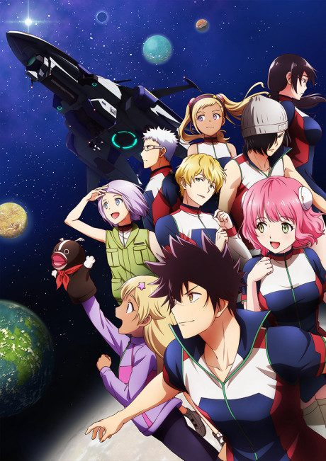
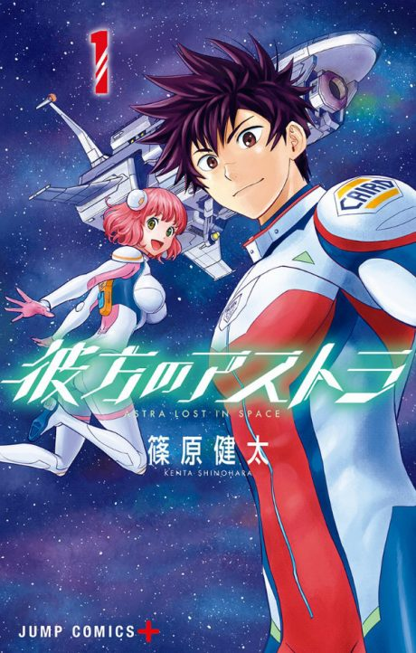

Anime
Manga2019 · Adventure, Mystery, Sci-Fi
ASTRA LOST IN SPACE
彼方のアストラ
AniList7.8
Animeter—
Episodes12 ep
MangaDone
Is it worth pushing through?
Built from what visitors report across all 12 episodes.
Loading reports…Checking what other people said about this one.
Sign in with your email at the top of the page to add your report.